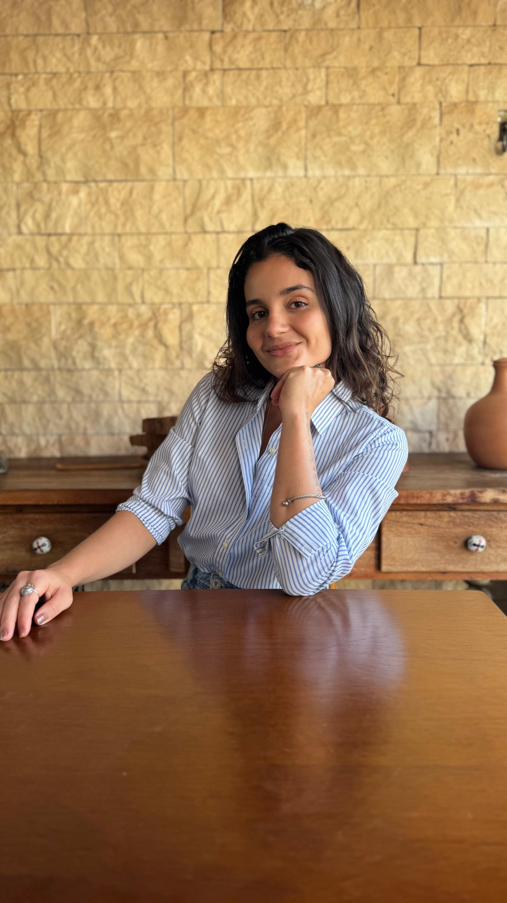

01 — Brand Guidelines
Conceito da marca
"Presença serena." A marca combina a profundidade do azul-petróleo — estabilidade, confiança, escuta — com a leveza da assinatura manuscrita, que traz o gesto humano e pessoal. O sistema traduz isso em superfícies claras e quentes, muito espaço em branco e uma única cor de destaque usada com extrema parcimônia.
Acolhedora · Serena · Sofisticada · Confiável · Discreta
Fala baixo e com precisão. Nunca grita, nunca decora demais. Elegância pela ausência.
Editorial e institucional — mais revista de arquitetura do que rede social.
Templates de Linktree, gradientes vibrantes, emojis, sombras duras, excesso de ícones.
Versões da identidade: horizontal (headers), selo circular (avatar/social) e monograma (favicon, marca d'água).
02 — Paleta de cores
Cores
Navy extraído da logo; neutros quentes extraídos das fotografias (linho, pedra, madeira). O dourado vem das joias da Beatriz e é o único acento — usado apenas em micro-detalhes.
03 — Tipografia
Prata + Jost
Prata (serif de alto contraste) ecoa o wordmark da logo e assina os títulos. Jost (geométrica humanista) ecoa o lettering espaçado "PSICÓLOGA | CRP" e cobre todo o texto funcional. Nunca usar mais de duas famílias.
04 — Espaçamentos
Escala de 4px
Base 4. O espaço em branco é o principal elemento decorativo do sistema: na dúvida, use o degrau acima.
05 — Border Radius
Cantos suaves
06 — Shadows
Elevação tingida de navy
Todas usam rgba(14,52,82, α) — nunca preto puro, para manter o calor da página.
07 — Grid & Breakpoints
Uma coluna, sempre centrada
{{ g.device }}
{{ g.bp }}
A página de links é uma coluna única de máx. 560px em todos os breakpoints — o container maior (site institucional) existe apenas para páginas futuras. Gutter padrão: 24px.
08 — Componentes
Especificações
Todos os cards clicáveis derivam de uma única anatomia-base (Card de Link) com variações de conteúdo — isso garante consistência e facilita a implementação. Estados universais: hover eleva 2px + shadow MD (200ms), active volta a 0 + scale 0.99, disabled opacidade 40% sem eventos, focus anel 2px navy com offset 2px.
{{ cp.name }}
09 — Ícones
Lucide
Lucide é a escolha: traço fino (stroke 1.5px), geometria calma e cobertura completa — combina com a Jost e com o gesto linear da assinatura. Phosphor (thin) é a alternativa aceitável; Heroicons é denso demais para o tom da marca.
10 — Fotografias
Direção de arte


11 — Animações
Movimento que respira
Tudo lento, curto e sutil. Uma única curva para o sistema inteiro: cubic-bezier(0.25, 0.1, 0.25, 1) ("ease calmo"). Nada pisca, nada salta, nada gira.
12 — Design Tokens
Nomenclatura
13 — Acessibilidade
WCAG 2.2 AA
14 — Moodboard
Clima visual
Um consultório de manhã: linho branco, madeira clara, pedra quente, um objeto de latão. Sobre essa base neutra, o navy aparece como tinta — profundo, estável, poucas vezes. A sensação-alvo ao abrir a página: respirar fundo. Referências de linguagem: a contenção da Apple, a precisão do Linear, o calor editorial da Kinfolk. Se algum elemento parecer "template de bio", ele está errado.